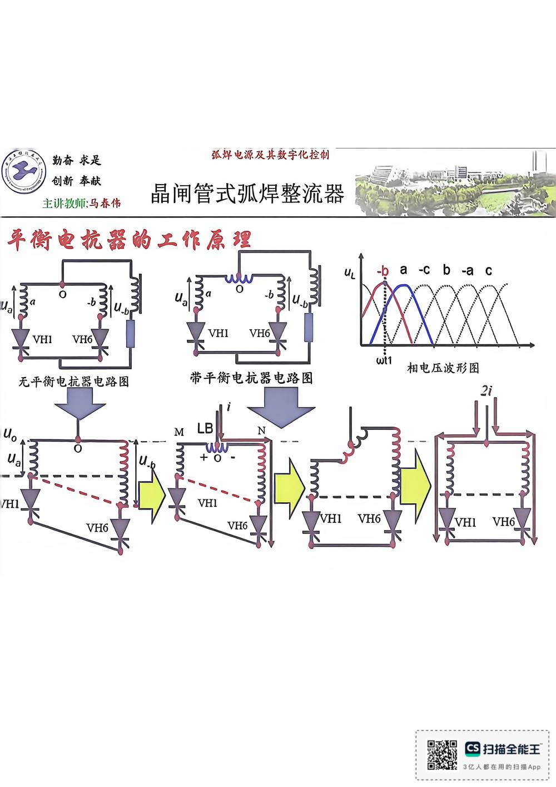

13 手写笔记/6~8周/h-w2-004 带平衡电抗器电路图
h-w2-004 带平衡电抗器电路图
📷 原图：
6~8周 焊接电源(差最后一节课)(1).pdf第 4 页（整页扫描，本库内嵌h-w2-004.jpg）
带平衡电抗器电路图

本页文字（OCR 整理）
- 平衡电抗器前工作原理
- 相电压波形图
- 无平衡电抗器电路图
- 带平衡电抗器电路图
本页重点（自动标记：含"定义/特点/要求/结论/公式"等，或与课件原句高度一致）
- 平衡电抗器前工作原理
OCR 说明
文字由 macOS Vision 识别手写体/翻拍页面得到，错字难免（如"弧"误识为"孤"）；重点标记据此推断，请以页图为准。
对应讲义页
关联
- ← 上一页 · 总览 · 下一页 →
- 讲义：00 第5章 晶闸管整流器 导航 · 概念：04 概念地图